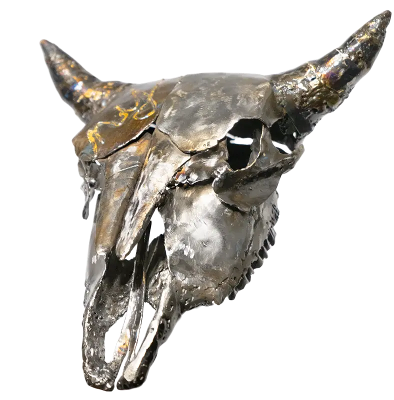

Buffalo Skull
2020 (12"x10"x8")
Steel
NFS
2007 - 2021
I’ve always been drawn to the weathered skulls of animals, especially those that have lived and died in harsh, unforgiving environments. These skulls, bleached by the desert sun, embody a raw and primal beauty that speaks of resilience, survival, and the inevitable passage of time. To me, they are more than just bones; they are silent witnesses to the struggles and toughness of both the animals and the people who lived on this land. Through this series of sculptures, I hope to capture that same strength and fragility these desert treasures represent.

2020 (12"x10"x8")
Steel
NFS

2007 (24"x16"x7")
Alabaster, Stone
$3500

2021 (19"x10"x4")
Stone
Pricing upon request

2018 (72"x36"x9")
Steel, Wood
$3800